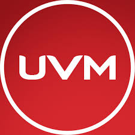

La Universidad del Valle de México (UVM) es una universidad privada mexicana fundada en el año de 1960. En su inicio su nombre era Institución Harvard, denominación que conservaría hasta 1968, año en el cuál obtuvo su nombre actual. Atiende a cerca de 129,000 estudiantes de preparatoria, licenciatura y posgrado[3] y forma parte de la red Laureate International Universities de instituciones privadas de educación superior.[4] La UVM ofrece programas de educación media superior, superior y de posgrado, ofrece programas académicos a través de 37 campus en el país con las divisiones: Ciencias de la Salud, Ingeniería, Hospitalidad-Turismo y Gastronomía, Negocios, Ciencias Sociales y la División de Arte, Diseño y Arquitectura, entre otras carreras, además de sus licenciaturas y posgrados en línea, es una escuela muy reconocida y preparada para formar a excelentes profesionales en sus respectivas áreas .[4] Entre sus egresados, se encuentran: Ricardo Anaya Cortés, político mexicano; Iván Alejandro García Navarro y Germán Saúl Sánchez Sánchez, ambos medallistas olímpicos en natación y clavados;[5] Vanessa Zambotti, judoca mexicana subcampeona de los Juegos Panamericanos de 2015;[6] el medallista taekwondoín Victor Estrada; José Ramón Amieva, quien fue Jefe de Gobierno de la Ciudad de México;[7] y Alexa Moreno, medallista de bronce en salto de caballo en el Mundial de Gimnasia Artística de 2019.
